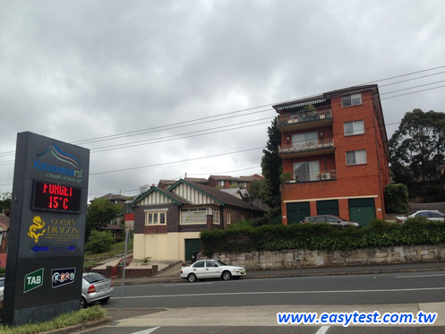
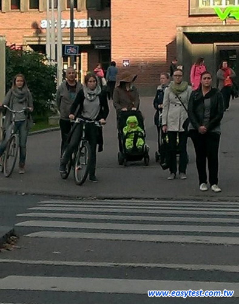
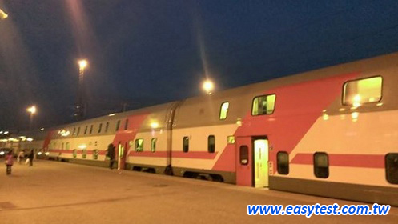
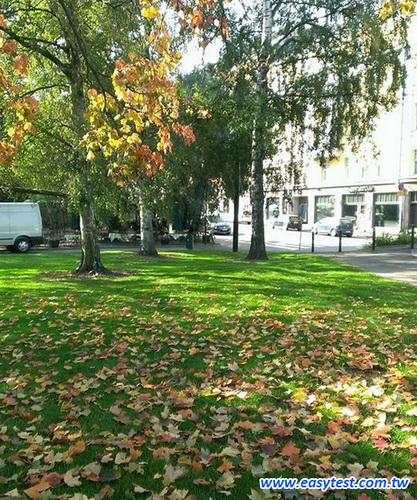
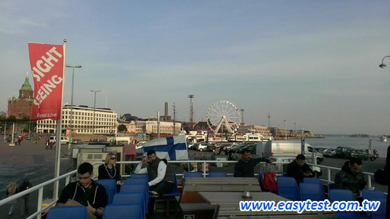

00:00
00:00
00:00
**請注意，訂正頁面顯示的選項順序為原始資料順序，可能會和測驗時的順序不同。
只顯示答錯
回上一頁
本題答錯
Question 1.
00:00
00:00
00:16

(A) The car is pulling into the driveway.
(B) The temperature is displayed on the sign.
(正解)
(C) The electricians are fixing the wires.
(D) An advertising video is playing on the screen.
a. 這台車正駛入馬路
b. 告示牌上顯示著溫度
c. 這些水電師傅正在修理電纜線
d. 螢幕上正在播放廣告影片
本題答錯
Question 2.
00:00
00:00
00:15

(A) The motorists are stopped at a traffic light.
(B) The competitors are lining up.
(C) The passersby are window shopping.
(D) Pedestrians are waiting to cross.
(正解)
a. 機車騎士停在交通號誌燈前
b. 競賽者正在排隊
c. 過客正在櫥窗購物
d. 行人正等著過馬路
本題答錯
Question 3.
00:00
00:00
00:15

(A) The passengers are queuing on the platform.
(B) The high speed rail traverses the country.
(C) The train cars have an upper level.
(正解)
(D) The vehicle is pulling into the station.
a. 乘客們正在月台上排隊
b. 這班高速列車橫跨這個國家
c. 這列車有上層座位
d. 車輛正開進站
本題答錯
Question 4.
00:00
00:00
00:14

(A) The grass is dried up.
(B) The lawn is littered with leaves.
(正解)
(C) The field is being mowed.
(D) The golf course is full of plants.
a. 這草地已被曬乾了
b. 草皮上散落一地樹葉
c. 這塊田野已割過草了
d. 這個高爾夫球場地滿是植物
本題答錯
Question 5.
00:00
00:00
00:18
(A) Most of the umbrellas are closed.
(正解)
(B) There's no space on the patio.
(C) The balcony overlooks an urban area.
(D) Guests can enjoy fishing while they eat.
a. 大部份的洋傘是關閉的
b. 露台上沒有空位
c. 在陽台上可以眺望市區
d. 顧客們可以邊用餐邊享受釣魚的樂趣
本題答錯
Question 6.
00:00
00:00
00:18

(A) The passengers are commuting to work.
(B) The hotel offers free transportation.
(C) The shuttle bus stops at the amusement park.
(D) The purpose of the vehicle is tourism.
(正解)
a. 這些乘客們通勤去上班
b. 這間旅客提供免費的交通
c. 這班接駁車停在遊樂園
d. 這台交通工具主要為觀光導覽
只顯示答錯
回上一頁